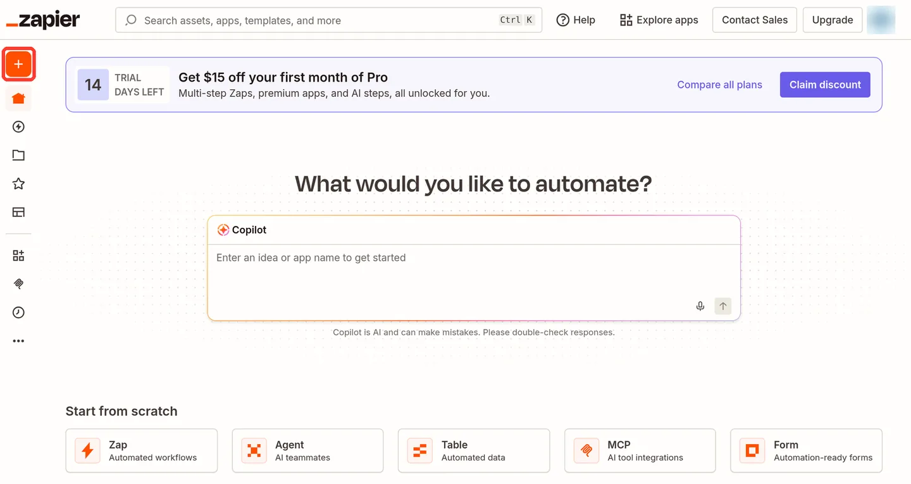
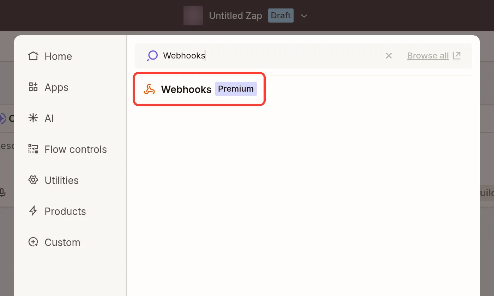
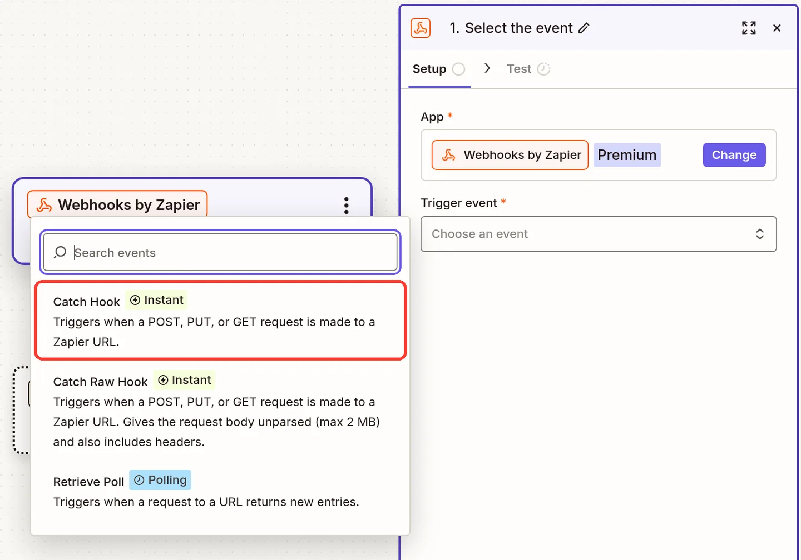
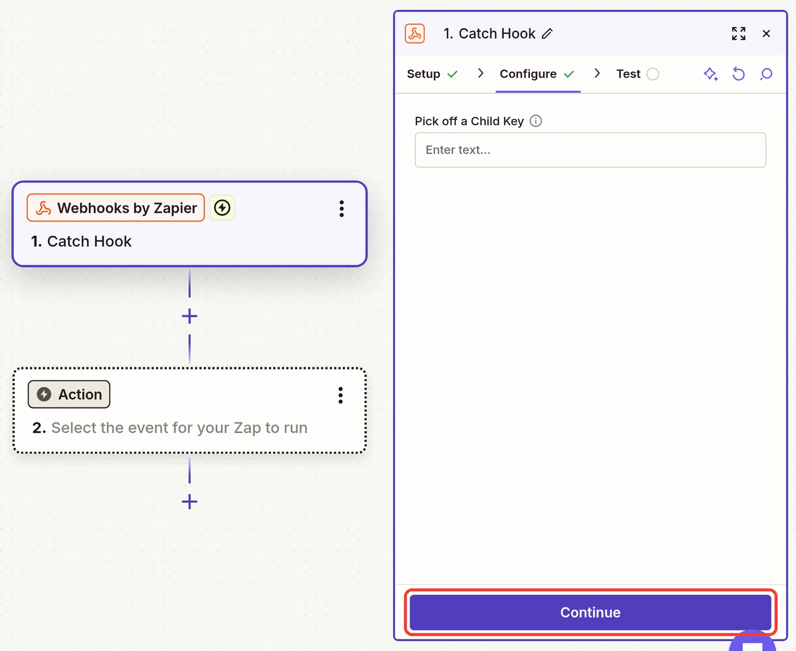
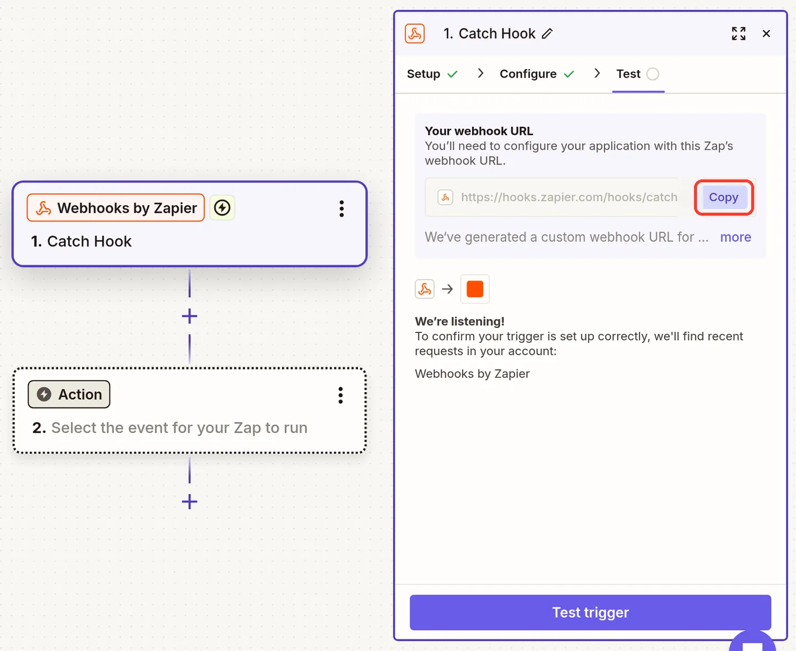
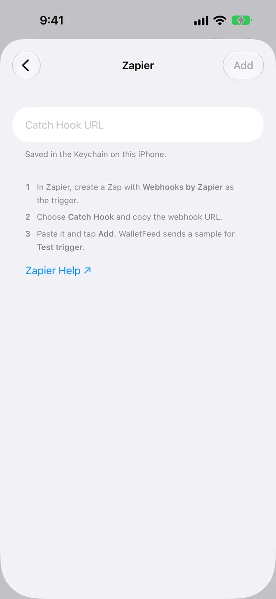
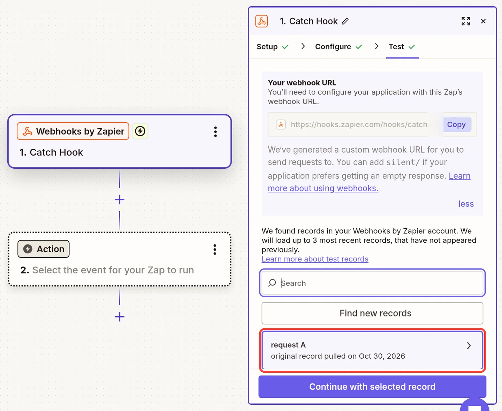
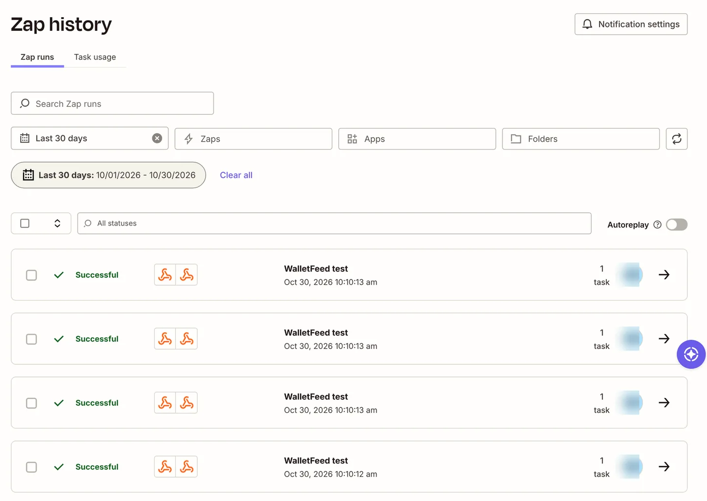
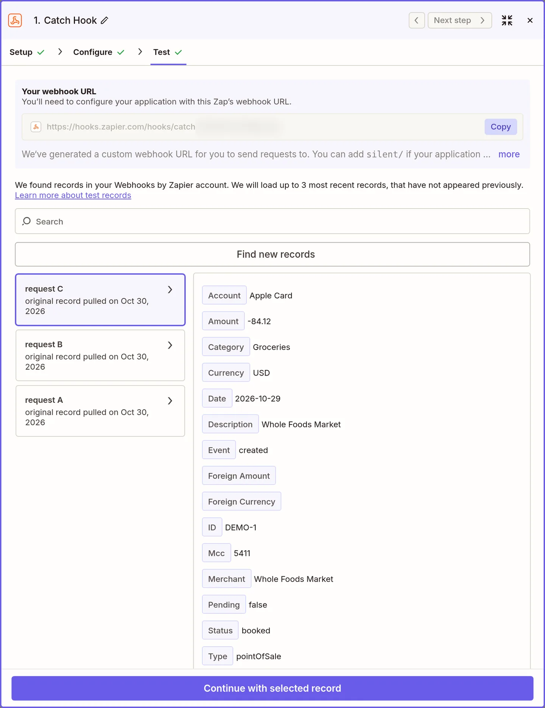
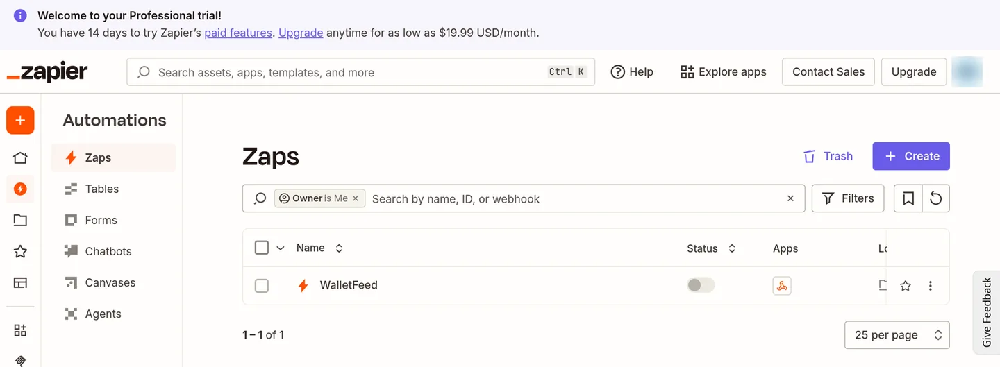

Send Apple Card transactions to Zapier
WalletFeed sends your Apple Card, Apple Cash and Savings transactions from your iPhone to Zapier. You make a Zap with a Catch Hook trigger in Zapier, then you paste the webhook URL of the trigger in WalletFeed.
Before you start
You must have these items:
- An iPhone with iOS 26 or a newer version. WalletFeed is available only in the US.
- WalletFeed on your iPhone. WalletFeed must have access to your Apple Card, Apple Cash or Savings account.
- WalletFeed Pro (a subscription with a 1-week free trial, or a one-time Lifetime purchase). WalletFeed Pro is necessary for all destinations.
- A Zapier account on a Professional, Team or Enterprise plan. These plans include Webhooks by Zapier. The Free plan of Zapier does not include it.
- A computer for the steps on the Zapier website.
Your URL stays on your iPhone
- WalletFeed keeps the webhook URL in the Keychain on your iPhone. iOS encrypts the Keychain.
- The webhook URL does not go to iCloud Keychain or to your other devices.
- WalletFeed has no account and no servers. No person at WalletFeed can see or get the webhook URL.
- Your iPhone sends the webhook URL only to Zapier, in each request to Zapier.
- When you delete the destination, WalletFeed deletes the webhook URL from your iPhone.
Step 1: Make a Zap with a Catch Hook trigger
The Catch Hook trigger has a webhook URL. When WalletFeed sends data to this URL, the Zap starts.
-
On your computer, open Zapier.
-
If you have a Zapier account, get access to it.
-
If you do not have a Zapier account, make an account on Zapier's sign-up page.
-
Click + at the top of the left sidebar.

-
Click Zaps.
-
Click the Trigger box.
-
In the search box, type
Webhooks. -
Click Webhooks. Zapier then shows the app as Webhooks by Zapier.

-
Under Trigger event, click Choose an event.
-
Click Catch Hook. Do not click Catch Raw Hook.

-
Click Continue.
Zapier can show a box about API by Zapier. WalletFeed does not use API by Zapier. You can close the box with ×.
-
On the Configure tab, make sure that the Pick off a Child Key field has no text. If this field has text, Zapier keeps only a part of each transaction.
-
Click Continue.

-
On the Test tab, under Your webhook URL, click Copy.

The field shows only the first part of the URL. But Copy copies all of the URL.
-
Keep this page open. You will use it again in Step 3.
Step 2: Add Zapier in WalletFeed
Before you add Zapier, you can set Initial History to Today. Then Zapier receives no previous transactions. With a different value, Zapier receives a maximum of 30 days of previous transactions. To set Initial History, do these steps:
-
On your iPhone, open WalletFeed.
-
Tap Settings (the gear button) at the top of the screen.
-
In the Sync section, set Initial History to Today.
Settings shows the Sync section only with WalletFeed Pro.
-
Tap Done.
To add Zapier, do these steps:
-
On your iPhone, open WalletFeed.
-
Tap Destinations.
-
Tap + at the top of the screen.

-
Under Automations, tap Zapier. You can also type
Zapierin the search field. -
If WalletFeed shows the WalletFeed Pro screen, get WalletFeed Pro on that screen. WalletFeed then opens the Zapier screen.
-
Paste the URL in Catch Hook URL.

Because a person with the URL can start your Zap, WalletFeed keeps the URL in the Keychain on your iPhone.
-
Tap Add. WalletFeed sends a sample transaction to Zapier.
-
Read the message Send Transactions to Zapier?
The message tells you the data that Zapier receives. It also tells you the accounts and the start date of the data.
-
Tap Send.
If you tap Cancel, WalletFeed does not add the destination.
Destinations then shows the new Zapier destination.
Step 3: Find the sample in Zapier
-
On your computer, in the Zap editor, click Test trigger.
-
Click request A.

Zapier shows the fields of the sample. Merchant is WalletFeed, and Amount is -4.2.
-
Click Continue with selected record. Zapier then shows the apps for the Action step.
Step 4: Add the Action step in Zapier
The Action step uses the data in an app. For example, the step can add a row to a Google Sheets spreadsheet.
- Select the app that receives the data, for example Google Sheets.
- Do the steps that Zapier shows for this app.
- If the action must have a value from the transaction, use the fields from Step 3, for example Merchant and Amount.
- Click Publish at the top right of the editor.
- In Automations › Zaps, make sure that the Status of your Zap is on.
Each time that the Zap does an action step, it uses one task in Zapier. The trigger uses no task. The Zap starts one time for each new transaction and for each change to a transaction.
Zap history in Zapier shows each time that the Zap started, and the tasks that it used.

Data that Zapier receives
Your transactions go from your iPhone directly to Zapier. WalletFeed has no account and no WalletFeed servers. After Zapier receives your transactions, the terms of Zapier are applicable to them.
In the Zap, the data of each change has these fields:
| Field in Zapier | Value from Wallet |
|---|---|
| Event | created for a new transaction and for each transaction from Send History, updated for each subsequent change, and deleted when Wallet removes the transaction |
| ID | The transaction ID from Wallet. It stays the same when the transaction changes. |
| Date | The date of the purchase in your time zone, for example 2026-10-29 |
| Merchant | The merchant name, or the description if Wallet has no merchant name |
| Amount | Negative for a purchase, for example -84.12, and positive for a refund or a payment, for example 49 |
| Currency | The currency code, for example USD |
| Category | The WalletFeed category, for example Groceries |
| Status | The Wallet status: pending, authorized or booked |
| Pending | true while the purchase is pending or authorized, and false after the status changes to booked |
| Account | The Wallet account, for example Apple Card |
| Description | The description from Wallet |
| Type | The type of transaction, for example pointOfSale or refund |
| Mcc | The merchant category code, for example 5411 |
| Foreign Amount and Foreign Currency | The amount and the currency code of a purchase in a different currency |
| querystring | A field that Zapier adds. It always has no value. |

For a deleted transaction, the data has only Event and ID. If Wallet does not give a value for a field, the field has no value in Zapier. An example is Foreign Amount for a purchase in dollars. In Zapier, an amount has no zeros at the end, for example 49 for $49.00.
New and changed transactions
While WalletFeed is open, Zapier receives changes in seconds. When WalletFeed is not open, iOS starts WalletFeed approximately 1 hour or less after a change in Wallet. If Background Sync is on in Settings › Sync, WalletFeed then sends the change.
Background Sync is on until you set it to off.
One transaction can start the Zap more than one time:
- Zapier receives a new purchase with Event
createdand Statuspending. - When the Status changes to
booked, Zapier receives the same ID again with Eventupdated. - If the bank does not accept a pending charge, or Wallet removes a transaction, Zapier receives Event
deletedand the ID.
A refund is a different transaction. It has a positive Amount and the Type refund.
If WalletFeed stops while it sends changes, it sends the same changes again at a subsequent time. Zapier starts the Zap again for each change that it received before. Thus, a Zap that adds a row for each change can add a transaction two times. A Zap that first finds the row by ID, and then updates it, keeps one row for each transaction. This Zap uses two tasks for each change.
Zapier can start the Zap for some changes at the same time. Thus, the Zap does not always get the changes in the sequence that WalletFeed sends them.
Send previous transactions
A new Zapier destination also receives previous transactions from the start date in Settings › Sync › Initial History. Initial History is All until you change it. But Zapier receives a maximum of 30 days of previous transactions.
To send more transactions, use Send History:
-
In Destinations, tap the Zapier destination.
-
Tap Send History.
-
Select a period (30 Days, 90 Days, 1 Year or All).
-
In the message Send History to Zapier?, tap Send.
The message shows "Each transaction runs your Zap."
WalletFeed sends the newest transactions first. Each transaction starts the Zap one time. Each action step uses one task in Zapier.
Send History sends each transaction with Event created. Thus, Zapier can receive the same transaction two times as created.
To stop Send History, do these steps:
- Tap Send History.
- Tap Stop Sending.
Change or remove the destination
Send only some transactions
- In Destinations, tap the Zapier destination.
- Set Filter to on.
- Change Include, Minimum, Include Pending, Accounts, Categories or Exclude.
For more information, refer to Choose what a destination receives.
To stop the destination for a time, set Enabled to off.
Replace the URL
If you make a new Zap, give its URL to WalletFeed:
- In Zapier, copy the webhook URL of the new Zap (refer to Step 1).
- In WalletFeed, open the Zapier destination.
- Tap Replace URL.
- Paste the new URL in Catch Hook URL.
- Tap Replace. WalletFeed sends a sample to the new URL before it keeps the URL.
The destination screen shows Webhook with hooks.zapier.com. It does not show all of the URL.
Delete the destination
- In WalletFeed, open the Zapier destination.
- Tap Delete.
- In the message, tap Delete again.
The transactions that WalletFeed sent stay in Zapier. They also stay in the apps that received them from your Zap.
When the Zap is off or deleted, it does not start for your transactions. But Zapier can accept requests at the URL for some hours, and WalletFeed shows no error.
To delete the Zap, do these steps:
- Open the Zap in Zapier.
- Click the Zap name at the top of the editor.
- Click Delete.
- If Zapier shows a message, click the button that deletes the Zap.
If there is a problem
If you cannot tap Add
The text in Catch Hook URL is not a Zapier webhook URL. The URL must start with https://hooks.zapier.com/hooks/.
- In Zapier, open the Test tab of the Catch Hook trigger.
- Click Copy.
- In WalletFeed, delete the text in Catch Hook URL.
- Paste the URL again.
If WalletFeed shows "The webhook refused the test"
Zapier did not accept the sample, because the URL is not correct or Zapier stopped the URL.
- In Zapier, open Automations › Zaps.
- If your Zap is not in the list, make a new Zap (refer to Step 1). Then do step 6.
- Click your Zap in the list.
- Click the Catch Hook trigger.
- On the Test tab, click Copy.
- In WalletFeed, delete the text in Catch Hook URL.
- Paste the URL in Catch Hook URL.
- Tap Add.
If the destination shows "Rejected (HTTP 404)"
Zapier did not accept the transactions, because the Zap is off or deleted. After the Zap is off, Zapier can wait some hours before it stops the URL.
- In Zapier, open Automations › Zaps.
- If your Zap is in the list, set its Status to on.
- If your Zap is not in the list, make a new Zap (refer to Step 1).
- If you made a new Zap, give its URL to WalletFeed (refer to Replace the URL).
If Zapier finds no request
You clicked Test trigger before WalletFeed sent the sample.
- In WalletFeed, open the Zapier destination.
- Tap Send Test. WalletFeed sends the sample again.
- In Zapier, click Find new records.
Zapier loads a maximum of 3 records at a time, and it does not always load the newest records. This limit is only for the test. When the Zap is on, it starts for each change.
If the Zap does not do its action
The Zap is a draft, or it is off. Zapier accepts the requests for the Zap, but the Zap does not do its action. WalletFeed shows no error.
-
In Zapier, open the Zap.
-
Click Publish.
-
In Automations › Zaps, set the Status of the Zap to on.

If the Zap stops after the Zapier trial
After the 14-day trial, the Zapier account is on the Free plan. The Free plan does not include Webhooks by Zapier.
- In Zapier, click Upgrade at the top of the page.
- Select a plan that includes Webhooks by Zapier, for example Professional.
If one transaction makes two rows
The Zap starts for each change to a transaction. WalletFeed can also send the same change two times.
- In the Zap, before the step that adds a row, add a step that finds the row by ID.
- If the step finds a row, update that row.
If Zapier receives transactions only while WalletFeed is open
Background Sync is off.
- In WalletFeed, open Settings › Sync.
- Set Background Sync to on.
Related
Updated October 30, 2026